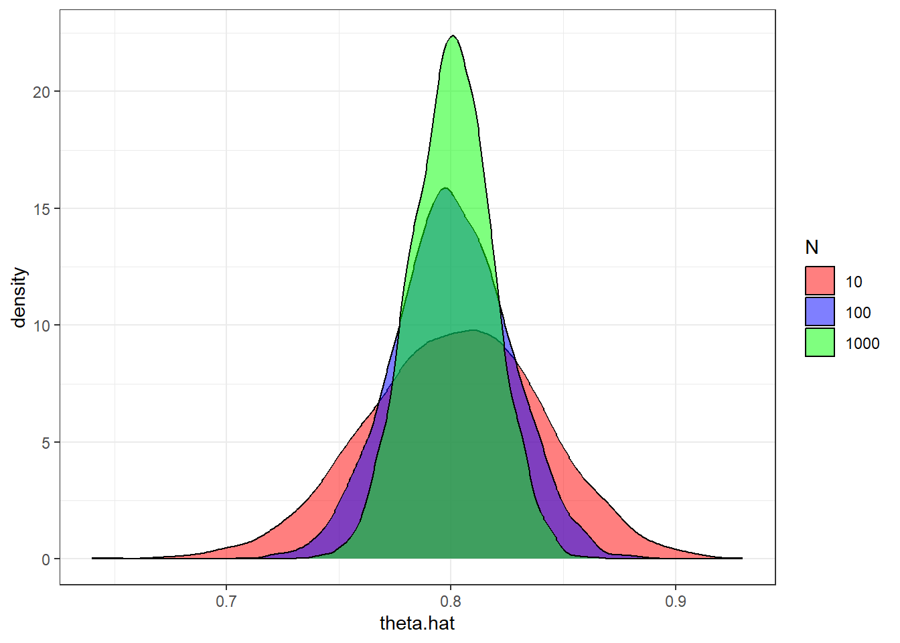
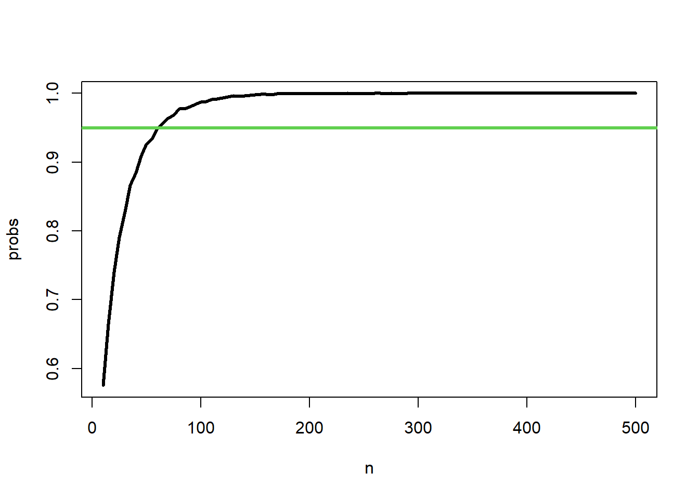

# Define sandhill crane over winter survival probability (P(Y=1))
theta = 0.8Probability Lab
Objectives / Exercises
- Objective 1) Get acquainted with the Bernoulli/Binomial probability mass function (PMF)
- Exercise 1a) Evaluate sample size requirements for tagging studies to asses survival
- Exercise 1b) Evaluate the robustness of our findings by varying the true value
- Objective 2) Get acquainted with the Poisson PMF
- Exercise 2) Evaluate sample size requirements for assessing a species’ mean relative abundance
- Objective 3) Get acquainted with a probability function you do not know well and additional markdown features
- Exercise 3) Use markdown to create a summary of a chosen probability function
Objective 1
Lets explore the Bernoulli/Binomial probability mass function (PMF). Imagine doing a tagging study to estimate the survival of sandhill cranes in New Mexico over the winter. We want to use the PMF to connect the ideas of generating data via a probability distribution that is defined by parameters.
In this situation, we are interested in simulating samples or observations (or more generally, generate synthetic data) of where cranes either lived (\(y = 1\)) or died (y = 0) over our period of interest (winter). If we use the Bernoulli PMF our focus is typically on each i\(^th\) crane, while if we are interested in the sum of the number of cranes that lived (\(\sum_{i}^n y_i\)) than we would use the Binomial PMF. Either way, we need to define the parameter associeted with both function, which is the probability of observing a 1 (\(P(Y=1)\)), which we will define here as \(\theta\). To make this a useful exercise, we want to decide on \(\theta\) could be in real life.
Remember, estimation is turning the process around and having data to inform the parameter. Before we do estimation, we want to understand probability functions through simulating/generating synthetic data so we have a better idea of what we are assuming about our empirical data when we use probability functions to estimate parameters. Plus, this process can help us guide our design of future studies.
The Bernoulli PMF is useful when thinking about a single event, happening once. Remember, this is a limiting case of the Binomial PMF. We will use the same function, but change the inputs.
Lets observe/generate a single data point where a crane dies (y = 0) or lives (y = 1). In a sense, we are flipping a theoretical coin with probability theta (i.e., \(P(Y = 1) = \theta\)) to observe/sample whether this tagged crane dies or lives.
rbinom(n = 1, size = 1,prob = theta)[1] 1Consider 10 tagged cranes to get a sample of the number of alive cranes (success’ or 1’s) at the end of the study
rbinom(n = 1, size = 10, prob = theta)[1] 8Now, consider 10 tagged cranes and you want to keep track of each bird and whether they lived or died (not just the sum of the alive ones).
rbinom(n = 10, size = 1,prob = theta) [1] 1 1 1 1 1 1 0 1 1 1Notice that changing the arguments ‘size’ and ‘n’ either focuses on the individual event of 0 and 1’s (size = 1) or the sum of the 1’s (size > 1). n controls how many of those outputs you would like to have
What if we wanted to generate synthetic data of mortality, rather than survival? Well, we just change our setup. Still assuming survival probability is 0.80, than the equivalent mortality probability would be \(\theta = 1 - 0.80 = 0.20\), such the we are saying the probability a crane dies is \(P(Y = 1) = \theta = 0.2\) Now, we can generate data of cranes that have died (1) and that have lived (0).
theta = 0.2
rbinom(n = 10, size = 1,prob = theta) [1] 0 0 0 0 0 0 0 1 0 1What is rbinom really doing? Well, the code is actually calling a function using the C programming language because it is fast. But, we can understand more simply what the binomial sampling process looks like by using the generic sample function.
The code here defines the outcomes of the stochastic process as either a 0 or 1; x is the argument name of the function. We are asking for 10 trials using size. The replace argument is telling the sampler that we are allowing it sample each outcome (0 and 1) more than one time. Lastly, we are defining the \(P(y = 1)\) to be 0.80 and the \(P(y = 0)\) to be 0.20. This code replicates the same process as the code above: rbinom(n = 10, size = 1,prob = theta).
Exercise 1a
Use your knowledge of the Binomial PMF and investigate the study design trade offs of a tagging study to estimate the survival of sandhill cranes. Consider 3 sample sizes of tagged individuals (N): 100, 250, and 500. Define the survival probability as $\theta$ = 0.80. For each sample, estimate the probability of survival using the estimator \(\sum(y)/N\), where y is the number of alive cranes at the end of the study and N is the number of total tagged cranes. We will justify this decision at a later point, but logically this should be a good estimator. For each sample size, you want to approximate the sampling distribution of the estimator. Once you have each sampling distribution,
- display the three sampling distributions on a single plot
- evaluate estimator bias and relative bias. Is the estimator biased?
- estimate the probability a given sample mean will be within 10% of the true values (
theta). - determine the most cost efficient number of tags to use such that there is 0.90 probability that a single sample mean is within 10% of the true value
Note: make sure you use enough replicates such that the sampling distribution appears well approximated (i.e., symmetric).
n.sim = 5000
n = c(100,250,500)
theta = 0.8
theta.hat=matrix(NA, nrow=n.sim, ncol=length(n))
theta.hat[,1]=rbinom(n.sim, n[1], theta)/n[1]
theta.hat[,2]=rbinom(n.sim, n[2], theta)/n[2]
theta.hat[,3]=rbinom(n.sim, n[3], theta)/n[3]
plot.data = data.frame(theta.hat = c(theta.hat), N = c(rep("10",n.sim),rep("100",n.sim),rep("1000",n.sim)))
ggplot(plot.data,aes(theta.hat,fill=N))+
scale_fill_manual(values=c("red","blue","green"))+
geom_density(alpha=0.5,binwidth=0.05,position="identity") +
theme_bw()Warning in geom_density(alpha = 0.5, binwidth = 0.05, position = "identity"):
Ignoring unknown parameters: `binwidth`
The estimated bias and relative bias show that the estimator is unbiased.
bias = apply(theta.hat,2,mean)-theta
bias[1] -0.0006680 -0.0000856 -0.0001304r.bias = (apply(theta.hat,2,mean)-theta)/theta
r.bias[1] -0.000835 -0.000107 -0.000163A sample size of 250 tags is the best choice to minimize costs and meet the objective of having a 0.90 probability of being within 10% of the true value of \(\theta\).
Exercise 1b
What if we are wrong about the assumed probability of survival? Well, we can evaluate this assumption! Rather than considering a single truth (\(\theta = 0.80\)), we can instead consider a range of true values. This way we can evaluate the robustness of our findings. Meaning, if we find that a sample size of 250 meets our objective (0.90 probability of being within 10% of the true \(\theta\)) across a range of assumed survival probabilities, we are can be confident in our recommendation of tagging 250 cranes. Keep in mind there is a lot of real world factors we have not accounted for yet!
Using a sample size of 250, evaluate whether there is at least 0.90 probability of being within 10% of the true \(\theta\) where \(\theta\) varies from 0.80 to 1.0 by increments of 0.05. For example, theta = seq(0.7, 1, by = 0.05).
- for each value of \(\theta\), generate the sampling distribution of estimates of \(\theta\) and then calculate the probability of being within 10% of that given values of \(\theta\)
- plot these probabilities on a x-y line graph where the x axis is the true value (\(\theta\)) and the y-axis is the estimated probabilities of interest
- using the plot, decide whether the findings are robust to the choice of \(\theta\)
n.sim = 5000
n = 250
theta = seq(0.8, 1, by=0.05)
prob.obj=rep(NA, length(theta))
for(i in 1:length(theta)){
theta.hat=rbinom(n.sim, n, theta[i])/n
limits.truth=c(theta[i]-theta[i]*0.05,
theta[i]+theta[i]*0.05
)
prob.obj[i] = length(which(theta.hat>=limits.truth[1] &
theta.hat<=limits.truth[2]))/length(theta.hat)
}
plot(theta, prob.obj,type="b",lwd=3,ylim=c(0.5,1),
xlab=expression(paste(theta)),
ylab="Probability of Objective")
abline(h=0.90,lwd=3,col=3)We see that our objective (green horizontal line) is met or is higher at all values of \(\theta\) ranging from 0.80 to 1.0.
Objective 2
The Poisson PMF is often the distribution used first when considering count data. For example, counts of plants or animals within a given area. Its always a goog choice when needing to consider rates, such as counts per unit effort. Note that we are not going to think about detection probability at this point. Assuming constant detection probability, we can think of these counts as a measure of relative abundance.
Let’s say we are interested in counts of American Pika in 10x10 m plots throughout boulder fields in the Rocky Mountains. First, we need to define the mean count, defined as \(\lambda\). Then, we need to decide on how many plots to sample (n).
Sample 10 plots, count pika in each, where the true mean is 100.
rpois(n = 10, lambda = 100) [1] 90 99 91 96 109 98 100 119 110 99Sample 10 plots where the mean is 2
rpois(n = 10, lambda = 2) [1] 3 3 1 0 2 2 1 3 0 2When considering the Poisson distribution, notice how few plots have zero pika. In ecological and wildlife sampling, zero counts are common for a variety of reasons. This is one reason people tend to model counts with two components - a Poisson distribution and a zero-inflated part. More about this later.
One of the interesting properties of the Poisson PMF is that it can be fully described with only one parameter (\(\lambda\)), which defines the mean and variance as equivalent. This parameter governs the central tendency of the observations and how much it varies.
Lets look at this property by simulating 10000 counts and estimating the mean and variance.
So, when using the Poisson distribution, we need to consider that the mean and variance will be assumed equal.
Exercise 2
Evaluate the sampling distribution of the estimator \(\sum(y)/N\), where y are the counts and N is the number of counts. Assuming \(\lambda = 100\), determine how many sample plots are needed such that the probability a sample is within 5% of the mean is at least 95%. Once this is completed, change to \(\lambda = 25\). How does your evaluation of the sample size change? Do you need the same, more, or less samples to achieve the same objective?
#Define inputs and outputs
lambda = 100
n = seq(10,500,by=5)
n.sim = 10000
mean.mat =matrix(NA, nrow=n.sim, ncol=length(n))
# loop over the different sample sizes - n
for(i in 1:length(n)){
y.temp = matrix(
replicate(n.sim,
rpois(n[i],lambda=lambda)
), nrow=n[i],byrow = TRUE
)
#Estimate mean of each sample
mean.temp = apply(y.temp, 2, mean)
mean.mat[,i] = mean.temp
}
dim(mean.mat)[1] 10000 99#Define 5% around truth
limits.truth=c(lambda-lambda*0.025,
lambda+lambda*0.025
)
#Estimate probability of being within 5%
probs = apply(mean.mat,2,FUN=function(x){length(which(x>=limits.truth[1] &
x<= limits.truth[2]
)
) / n.sim
}
)
# Plot the probability versus the sample size
plot(n,probs,type="l",lwd=3,col=1)
abline(h=0.90,lwd=3,col=3)
We need 45 samples to achieve our objective.
Changing to \(\lambda = 25\), we see that a lot more samples are needed to achieve the same objective (>100).
Objective 3
There are a lot of probability functions that are commonly used in wildlife and ecological modeling. Generally, a lot these functions fall within the exponential family of probability functions. The objective is to become a bit more familiar with a new probability function and to use the nice features of markdown to describe the function and its various properties.
Exercise 3
Create a summary of a probability function of your choosing. If you aren’t sure pick from here: Binomial, Poisson, Log-Normal, Beta, or Gamma. If you feel comfortable with these distributions then choose from a long list of options from wikipedia.
Follow the example below for the Discrete Uniform probability distribution and …
- Define the random variable \(y\) that is \(iid\) from your distribution
- Define the sample space and parameter space for each parameter
- Include the equation of the probability density/mass function
- Define the expected value (mean) and variance of the distribution (if they exist in closed form)
- Visualize (plot outputs) the pdf/pmf using at least 2 sets of parameters
- Demonstrate using code how to calculate the probability of data over certain ranges (e.g. pnorm).
- Demonstrate how to find the values of data pertaining to a certain probability (e.g. qnorm).
- Plot a small and large sample from the distribution. Comment on whether the samples looks like the PDF.
- Provide an example of what type of data this probability function could be useful for
For simplicity, use the setup below and swap in code and notation for your chosen probability function.
Discrete Uniform
The discrete uniform distribution defines probabilities for a set of integer values ranging from a lower bound to an upper bound.
\[ y \sim \text{Uniform}(a,b) \]
Support
The support of the random variable \(y\) is \[ y \in \{a, a+1,..., b-1, b\} \]
The support of the parameters \(a\) and \(b\) are all integers, where \(b \geq a\), and \(n = b-a+1\).
Probability Function
\[ f(y|a,b) = \frac{1}{n} \]
Mean/Variance
\[ E[y] = \frac{a+b}{2}\\ Var[Y] = \frac{n^2-1}{12} \]
Plotting
Example 1
#Parameters
a=1; b=5
# Sample Space of RV
x=seq(a,b,by=1)
n=length(x)
#plotting probability mass
plot(x,rep(1/n,length(x)),col=2,pch=18,cex=3,
ylab="f(y)",xlab=c("a = 1, b = 5"))
abline(v=(a+b)/2,lwd=3,col=4)
legend("topright",lwd=3,col=4,legend=c("Mean"))Example 2
Probability
The probability of observing samples \(\geq\) 60 when \(a\) = 10 and \(b\) =100 is,
Sampling
#Parameters
a=10; b=100
#Sample at different sample sizes
sample.size=100
sample.size2=10000
y=round(runif(sample.size,a,b),digits=0)
y2=round(runif(sample.size2,a,b),digits=0)
#plotting samples with True probability
par(mfrow=c(1,2))
hist(y,main="N = 100",freq = FALSE)
abline(h=p,col=3,lwd=3)
hist(y2,main="N = 10000",freq = FALSE)
abline(h=p,col=3,lwd=3)Even at a sample size of 10000, the probabilities are still a bit wonky from the truth, but close. Certainly a lot close to the sample size at 100.
Ecological Data
The discrete uniform is not a very useful probability distribution for data. However, it is commonly used as a prior probability distribution when fitting a model using Bayesian inference for parameters that can only be integers within a given range.